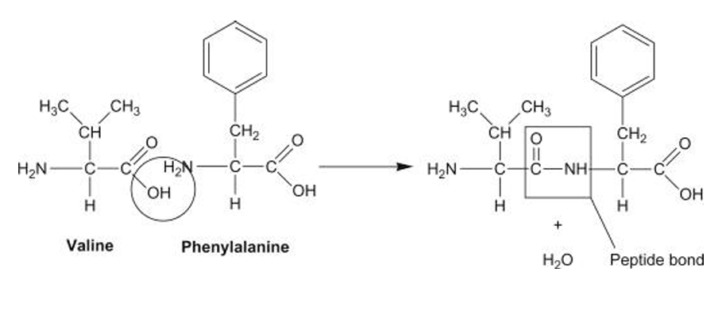
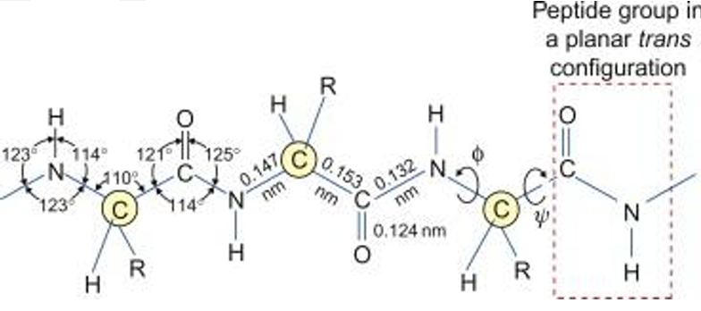

🧬 Proteins: Important Questions & PYQs
Master Unit-3: PROTEINS of Fundamentals of Biomolecules for Semester 2 of BSc Zoology Hons DU exams. This dedicated resource provides highly repeated Previous Year Questions, the most Important topics, detailed solutions and expert exam strategies tailored specifically for unit-3 (Proteins) for Delhi University BSc zoology semester 2 students.
Top Answered PYQ
Qus: With the help of well-labelled bond angles and bond lengths, diagrammatically explain that the peptide bond is rigid and coplanar.
PROTEINS
BONDS STABILIZING PROTEIN STRUCTURE
Proteins are stabilized by various covalent and non-covalent interactions, among which the peptide bond is the primary linkage forming the backbone of proteins.
Its unique structural properties impart rigidity and define protein conformation.
Peptide Bond:
Peptide bond: — CO — NH —
Formation:
- Formed between:
- –COOH of one amino acid
- –NH₂ of another amino acid
- Reaction: Condensation (dehydration)
- One molecule of water is released
This forms the polypeptide backbone.

Nature of Peptide Bond:
- It is a covalent amide bond
- Shows partial double bond character
- Therefore, Rigid, Planar and Non-rotatable
Evidence for Rigidity and Planarity
1. Partial Double Bond Character
- Due to resonance between:
- Carbonyl group (C=O)
- Amide nitrogen (C–N)
Electron delocalization:
O=C-NH ↔ O⁻-C=N⁺H
- C–N bond behaves like a partial double bond
- Restricts rotation
2. Bond Lengths
| Bond | Length |
|---|---|
| C–N (peptide bond) | ~1.32 Å |
| C=O | ~1.24 Å |
| N–H | ~1.0 Å |
Key point: C–N is shorter than single bond → confirms double bond character.

3. Bond Angles
- Around C and N ≈ 120°
- Indicates sp² hybridization
Leads to Flat (planar) structure.
4. Planar Geometry
- All atoms in peptide unit lie in same plane: Cα – C – O – N – H – Cα
- This creates Rigid backbone and Fixed geometry
5. Restricted Rotation
- No rotation around C–N bond
- Rotation allowed only around:
- N–Cα → φ (phi angle)
- Cα–C → ψ (psi angle)
These angles control protein folding.
6. Trans Configuration
- Most peptide bonds exist in trans form
- Reduces steric hindrance between R-groups
Exception: Proline may show cis form.
| Phi (φ) angle | Psi (ψ) angle |
|---|---|
| Rotation around the N–Cα bond | Rotation around the Cα–C (carbonyl) bond |
| Involves atoms: C–N–Cα–C | Involves atoms: N–Cα–C–N |
| Defines rotation of the amino group relative to the α-carbon | Defines rotation of the carbonyl group relative to the α-carbon |
| Restricted due to steric hindrance between side chains and backbone atoms | Also restricted due to steric hindrance |
| Determines backbone conformation along with ψ angle | Works together with φ angle to define overall protein folding |
Complete List of Important Questions for Proteins (DU sem 2 PYQs)
Ensure you can answer all of these before heading into your exams. These are compiled directly from past DU Bsc zoology PYQs to save your time and maximize your score.
1. Amino acids: Structure, Classification, and General Properties
- Zwitter ions: Define this term.
- Cysteine and Cystine: Differentiate between these two.
- Essential and Non-essential amino acids: Distinguish between these categories.
- Amphipathy: Define this term in the context of biomolecules.
- Peptide bond: Define its nature.
- Physical Properties: Explain how an increase in side-chain alkyl group numbers affects the properties of amino acids.
- Isoleucine: Draw the structural formula.
- Proline: Draw the chemical structure.
- Leucine: Draw the chemical structure.
- Physiological Importance: Explain the physiological importance of amino acids.
- General Classification: Write a short note on the classification of amino acids.
2. Proteins: Bonds Stabilizing Protein Structure
- Peptide Bond Rigidity: With the help of well-labelled bond angles and bond lengths, diagrammatically explain that the peptide bond is rigid and coplanar. (Answered Above ↑)
- Tertiary Structure Forces: Describe the forces responsible for maintaining the tertiary structure of proteins.
- Stabilizing Bonds: Identify which bonds are not broken upon denaturation (Fill in the blank).
- Phi and Psi angles: Differentiate between these two angles.
- Information for Folding: Justify the statement that "information of protein folding resides within the sequence of amino acids".
3. Levels of Organization in Protein Motifs, Folds, and Domains
- General Organization: Discuss the different levels of protein organization with suitable diagrams.
- Secondary Structure: Describe various types of secondary structure of protein taking suitable examples.
- Alpha helix vs. Beta pleated sheet: Differentiate between these two secondary structures.
- Ramachandran plot: Write a short note on the Ramachandran plot.
- Molecular Chaperones: Define their role in protein biology.
4. Denaturation
- Concept: Write a short note on protein denaturation.
- Mechanism: Explain the breaking of bonds and loss of structure.
5. Historical Contributions (Related to Proteins)
- Linus Pauling: Give his contributions to the study of proteins.
- Frederick Sanger: Give his contributions to biochemistry (specifically protein sequencing).
Ready to ace your exams? Don't let tricky concepts like the Ramachandran plot or Structures of Proteins slow you down. Download the complete, premium SayHeyShubh BSc zoology notes to access all fully solved answers, detailed diagrams, and step-by-step explanations for every single unit!